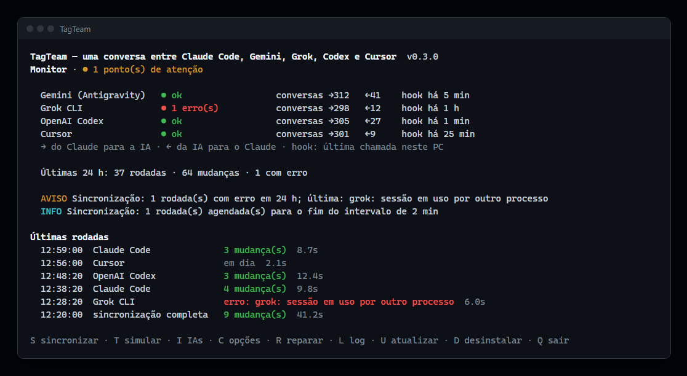

Uma conversa entre Claude Code, Gemini, Grok CLI, OpenAI Codex e Cursor.
Bateu o limite de 5 horas no meio da tarefa? Troque de IA sem recomeçar do zero. O TagTeam espelha suas sessões nativas nos dois sentidos e escreve um bilhete de passagem de cinco linhas antes de parar.
- Claude Code
- Gemini · Antigravity e agy CLI
- Grok CLI
- OpenAI Codex · app e CLI
- Cursor · CLI e app

Instale com um comando
Requer Windows 10/11 e Claude Code. Cole no PowerShell: ele confere o Python 3.11+ (e oferece instalar), baixa a versão mais nova conferida pelo SHA-256 e abre a instalação do TagTeam.
irm https://mop4r.github.io/tagteam/install.ps1 | iex
A instalação mostra quais IAs estão no seu PC; você marca as que vão sincronizar, escolhe as opções (pasta padrão, o mesmo ambiente do Claude em cada IA, atalhos, status line, passagem, pastas que nunca saem do Claude) e acompanha passo a passo. Os CLIs oficiais agy, grok e codex só são instalados para as IAs marcadas. Faça login uma vez em cada CLI e trabalhe normalmente: cada conversa aparece direto no claude --resume, na barra do Antigravity, no atalho Agy CLI --resume, no Grok --resume, no app do Codex, no Codex --resume e no Cursor CLI --resume.

O que fica sincronizado
| Do Claude Code | Gemini (Antigravity / agy) | Grok CLI | OpenAI Codex | Cursor |
|---|---|---|---|---|
| Conversas | Nos dois sentidos (app + CLI) | Nos dois sentidos | Nos dois sentidos (app + CLI) | Nos dois sentidos (CLI cursor-agent e o app) |
~/.claude/CLAUDE.md |
Referenciado no ~/.gemini/GEMINI.md |
Carregado nativamente + ~/.grok/AGENTS.md |
Bloco no ~/.codex/AGENTS.md |
Carregado nativamente |
| Skills, plugins e MCP | Manifestos em ~/.gemini/config/ |
Habilitados no ~/.grok/config.toml |
Skills por junção, plugins nativos, MCP pela API do Codex | Skills e plugins nativos; MCP em ~/.cursor/mcp.json |
| Passagem automática a 95% | Sim (API local de cota) | Manual (Grok não expõe uso fora da TUI) | Manual | Manual |
Perguntas frequentes
O TagTeam envia minhas conversas para algum servidor?
Não. Tudo roda localmente lendo e gravando arquivos no formato nativo de cada ferramenta, sem telemetria e sem proxy.
E se eu continuar a mesma conversa nas duas ferramentas?
Nada se perde: cópias continuadas nunca são sobrescritas. A próxima sincronização cria uma nova versão ao lado da original.
Funciona em mais de um PC?
Sim. Sincronize ~/.claude/projects com git, Syncthing ou OneDrive; o TagTeam mantém o estado por máquina e remapeia caminhos de usuário e unidade.